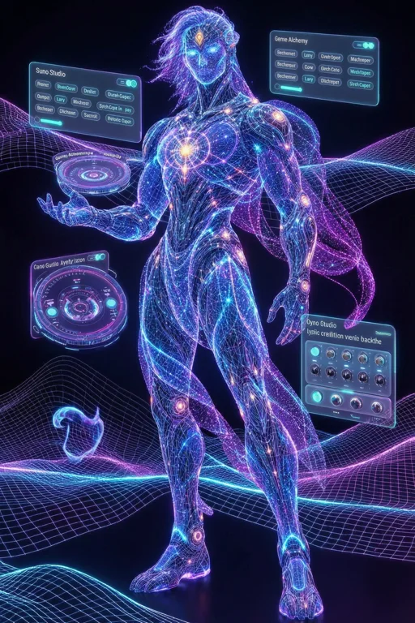

<section class="hem-console" aria-label="Studio control console">
 <div class="console-backplane">
  <section class="console-monitor console-left" aria-label="Session monitor">
   <header><span>SESSION / 01</span><span class="console-indicator">LOCAL</span></header>
   <button class="console-tempo" id="consoleTempoButton" aria-label="Open session tempo controls"><span class="console-ticks"></span><span class="console-dial"><strong id="consoleTempo">110</strong><small>BPM</small></span></button>
   <div class="console-data"><span>TRACKS</span><strong id="consoleTracks">0</strong><span>PLAYBACK</span><strong id="consolePlayback">Stopped</strong></div>
   <button data-view="studio" class="console-key">Open mixing desk ↗</button>
  </section>
  <section class="console-monitor console-center" aria-label="Ghost assistant console">
   <header><span>HYBRID ELITE MAFIA</span><span>GHOST / CORE</span></header>
   <div class="console-projection"><div class="projection-platform"></div></div>
   <div class="console-core-title"><span>GHOST IN THE MACHINE</span><h2>Creative control.</h2></div>
   <div class="console-readout"><span>YOUR SESSION</span><strong id="consoleSession">Untitled session</strong></div>
  </section>
  <section class="console-monitor console-right" aria-label="Studio output monitor">
   <header><span>AUDIO / 02</span><span>OUTPUT</span></header>
   <div class="console-scope"><canvas id="consoleSpectrum" width="480" height="220" aria-label="Live studio output spectrum"></canvas><span id="consoleSignal">No studio signal</span></div>
   <div class="console-data"><span>WORKFLOWS</span><strong>1,268</strong><span>PROCESSORS</span><strong>18</strong></div>
   <button data-view="forge" class="console-key">Open processor rack ↗</button>
  </section>
 </div>
 <div class="console-base">
  <div class="console-base-label"><span>HEM</span><small>CREATIVE STUDIO</small></div>
  <button data-view="studio" class="console-pad"><span>01</span>Mix</button>
  <button data-view="lyrics" class="console-pad"><span>02</span>Write</button>
  <button data-chain-library class="console-pad"><span>03</span>Chains</button>
  <button id="consoleFind" class="console-pad"><span>04</span>Find</button>
  <div class="console-base-end" aria-hidden="true"><i></i><i></i><i></i><i></i></div>
 </div>
</section>
